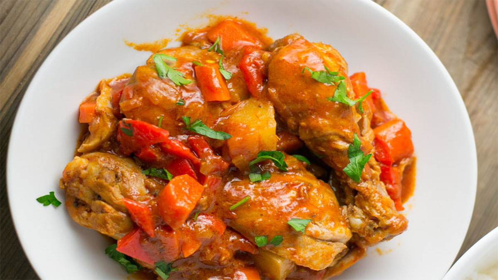

Collection of Chicken Recipes
Adobong Manok

Chicken adobo is a Filipino treasure and considered to be the national dish. It was first noted by the Spanish back in 1613 as a method or preparation of cooking and preservation by the Filipinos. Adobo means marinade and comes from the Spanish word Adobar.
Tinola

Tinola is an authentic Filipino dish, in fact it was invented around 1800's and even referenced in Jose Rizal's book Noli Me Tangere in Chapter 3 where Capitan Tiago ordered the said dish after he missed eating it for a long time when he extended his stay in Europe.
Chicken Afritada
Afritada is a Philippine dish consisting of chicken braised in tomato sauce with carrots, potatoes, and red and green bell peppers. It is served on white rice and is a common Filipino meal.
Chicken Curry